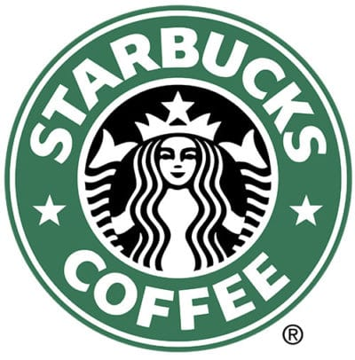
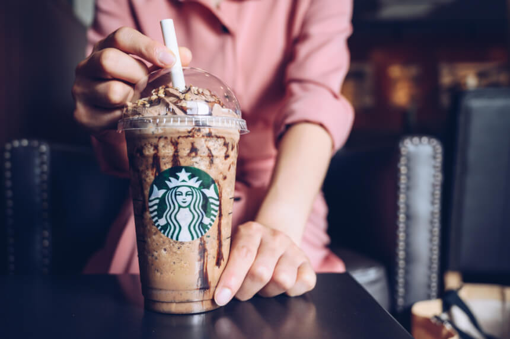

Com sua ação caindo 24% desde o início do ano, o Starbucks enfrenta uma tempestade perfeita: o tráfego nas
lojas está fraco, as vendas crescem pouco na China, e as margens de lucro estão ficando magrinhas. Para
piorar as coisas: parte de seus baristas estão se sindicalizando, revoltados com o que alegam ser “condições
estressantes de trabalho.” (Respondendo à crise, o Starbucks separou US$ 1 bilhão para “benefícios
trabalhistas” este ano e aumentou seu salário nos Estados Unidos para US$ 17 a hora.)